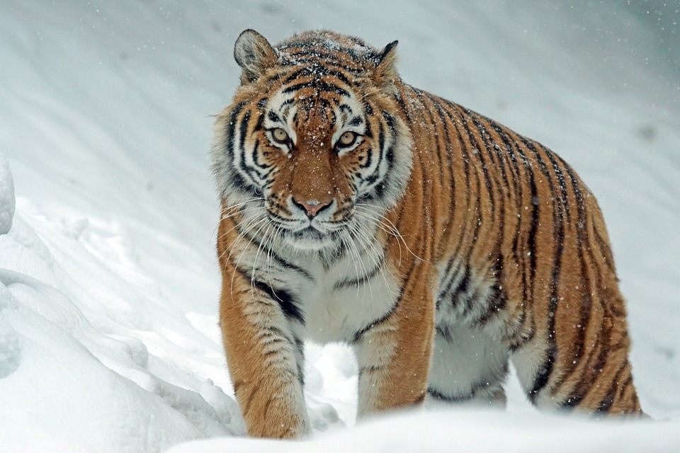

Тигр — вершина пищевой цепи в экосистеме уссурийской тайги. Это значит, что от его численности зависит вся дальневосточная природа: не будет тигра — не будет и природы. Чтобы этого не произошло, в местах обитания должно хватать копытных. Основной рацион — это кабаны, пятнистые олени, изюбри и косули. Если этих животных не хватает, тигры питаются барсуками, енотами, зайцами, рыбой, а иногда заваливают медведей. В сильный голод амурские тигры нападают на домашний скот и собак. Но, чтобы быть сытым и здоровым, одному тигру все равно нужно полсотни копытных в год.
